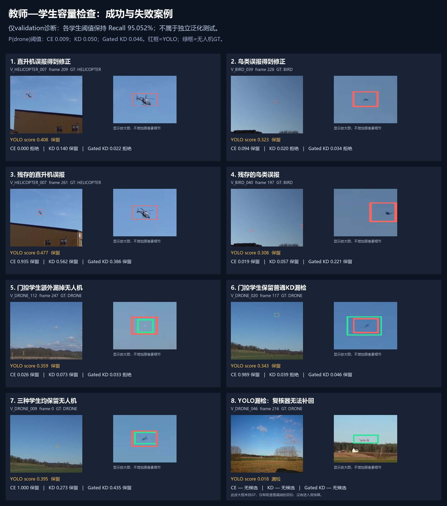
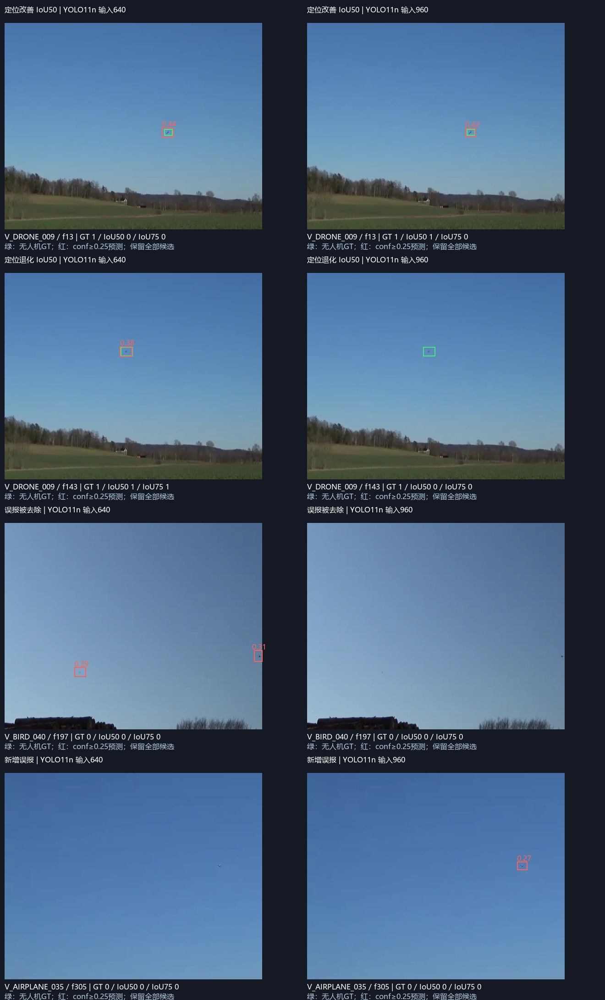

普通蒸馏 KD
学生同时学习真实标签与教师五类软概率；温度 T=2，CE 与 KD 各占 0.5。
当前范围：无人机本体检测与 60 GHz 强化学习调度。PA 已停止投入，旧结果留作历史资料。“离线强教师 → 在线小模型”仍在候选池中；现阶段不确定最终选题。
正在读取已完成实验的结果…
冻结 DINOv2 ViT-S/14（2206 万参数）提取候选框特征，用训练集五类标签训练线性分类头。学生是预训练 MobileNetV3-small（152 万参数），以无人机、直升机、鸟、飞机和背景进行 8 轮训练。部署形式为 YOLO 候选框 + 轻量复核器。
学生同时学习真实标签与教师五类软概率；温度 T=2，CE 与 KD 各占 0.5。
只有教师对正确类别的概率高于其他类别时，才迁移其知识；边距越大权重越高，直升机、鸟、飞机的有效信号再乘 2。
对照三支的初始权重、训练样本顺序与 688 次更新一致。门控版本在相同召回下比 CE / 普通 KD 少 3 个误报，是局部正向信号。普通 KD 未超过同容量 CE。教师仍优于学生，迁移尚未完成。
固定 0.5 会删掉较多无人机；误报下降需要与召回损失一起读。概率尺度不同，不能只看这个阈值判定教师或学生强弱。
滑动后从已保存验证曲线中选满足目标召回的最高阈值。这里展示阈值取舍，没有重新训练，也不是独立测试成绩。

图中的框来自 YOLO 预测。数字为各复核器的无人机概率；保留/拒绝按各自验证诊断阈值决定。案例用于解释机制，整批结果见上表。
学生实验报告 · 数据与实现审查 · 教师—学生论文与候选
无需重训，先检查增加有效分辨率是否提供更好的检测框。这个对照为高分辨率教师路线提供依据；单独增大输入分辨率属于已有方法。

当前 PPO 主要奖励已交付吞吐。本轮在同一模型上比较普通续训、队列漂移奖励、超阈值积压惩罚。网络仍是原 35 维状态 / 180 个动作，参数和训练预算一致。
使用行动前后的队列差异：减少积压时给奖励，增长时扣分。平方队列会强调较大积压；每步增量截断后乘 0.02。
当用户队列超过 2000 包时扣分，惩罚持续积压。阈值和系数在运行前固定，没有展开参数搜索。
曲线来自保存的真实仿真轨迹，三个方法使用相同外生到达/遮挡随机过程。Pending 为仿真窗口结束时未交付包占总到达比例。它不是丢包率；已交付包的时延也不能代表这些未完成包。
| 方向 | 候选机制 | 当前依据 / 下一步 |
|---|---|---|
| 视觉 | 近类感知的可信教师蒸馏 | 教师有效、门控学生有初步信号；随后迁入 YOLO 训练 |
| 视觉 | 小目标定位 / 尺度选择蒸馏 | 先读 640/960 定位诊断，再做大教师 → 640 学生 |
| 视觉 | 候选轨迹的轻量时序判别 | 单帧 vs EMA vs 真实因果历史；尚未训练新时序模型 |
| 视觉 | 语义 + 轨迹可靠性筛选伪标签 | 先测伪标签正确率与覆盖率，后训练学生 |
| RL | 队列约束 + 自适应用户先验 | 固定奖励和原用户先验已试；自适应机制仍待验证 |
| RL | 部分观测历史策略 / 条件动作结构 | 先测观测退化，再训练 GRU 或用户→配置 actor |
| RL | 多场景 / 特权教师 → 小部署策略 | 先验证教师比现有 PPO 强，再检验闭环迁移 |
| RL | 历史世界模型辅助预测 | 先超过简单持续性预测，再考虑想象轨迹或强教师 |
后续 4×4090 更适合扩大教师、分辨率和跨场景训练。视觉可考虑 DINOv3 / SAM 3；权重需要官方访问授权，当前尚未部署。RL 原策略很小，应让更大模型解决部分观测与跨场景问题，而不是单纯增大参数。
普通 KD、可靠性筛选、Lyapunov 思路、条件策略和世界模型均有先例。我们的候选贡献是它们针对当前失败模式的具体设计及验证；本轮没有宣称学术首创。